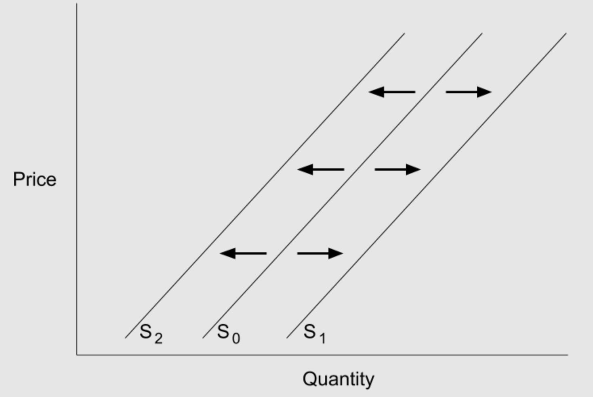

Price Shift in Quantity Demanded: A shift along the demand curve, solely resulting from a price adjustment, is referred to as a change in the quantity demanded. Since we are moving along the current demand curve in this instance, the demand curve does not change.
Non-Price Shift in Demand: A shift in the entire demand curve, or a change in demand, is brought on by a number of different variables (Tastes and preferences, number of consumers, Price of related goods, Income, and Future Expectations). The demand curve as a whole shifts left or right in this situation.
Price Shift in Quantity Supplied: A shift along the supply curve that results exclusively from a change in price is referred to as a change in quantity supplied. A change in quantity supplied indicates that we are progressing along the current supply curve, much like a change in demand does.
Non-Price Shift in Supply: A shift in the supply curve as a whole is referred to as a change in supply, and it is brought on by movers like taxation, production prices, and technology. This indicates that the entire supply curve shifts left or right, similar to how demand does.
